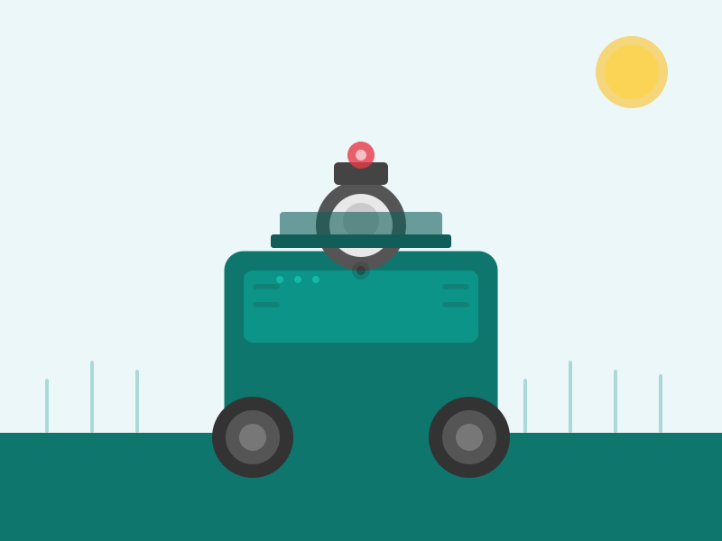
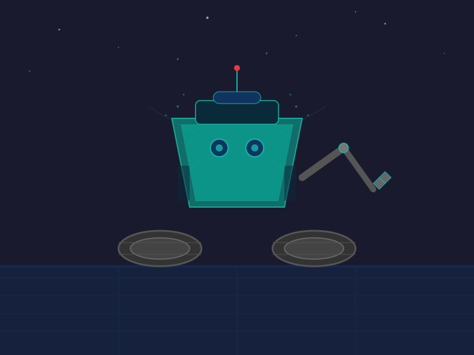
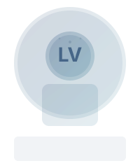
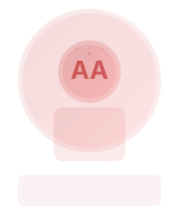
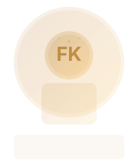

Elbe-Robotics entwickelt intelligente, autonome Robotiklösungen für das Flächen- und Agrarmanagement – und darüber hinaus.

Unsere modularen Roboter verbinden autonome Navigation, intelligente Sensorik und eine zentrale Softwareplattform. Vier Einsatzbereiche – eine Plattform.
Autonome Ernteprozesse für verschiedene Feldfrüchte – rund um die Uhr.
🗺️Intelligente Überwachung und Kontrolle landwirtschaftlicher und gewerblicher Flächen.
🧹Automatisierung wiederkehrender Reinigungs- und Pflegeaufgaben.
🛡️Kontinuierliche Überwachung durch intelligente Sensorik und aktives Eingreifen.

Roboter unterstützen durch automatisierte Ernte verschiedener Feldfrüchte. Mit schonendem Umgang für Pflanzen und Boden – 24/7 einsetzbar und modular für unterschiedliche Kulturen anpassbar.
Durch autonome Überwachung können landwirtschaftliche und gewerbliche Flächen regelmäßig kontrolliert werden – ohne zusätzliches Personal vor Ort.
Unsere Robotersysteme können perspektivisch Müll und Verschmutzungen erkennen und aufnehmen, kleinere Hindernisse entfernen sowie Kehraufgaben und die Grünpflege übernehmen.
Unsere Maschinen können mit Kameras, LiDAR und weiteren Sensoren ihre Umgebung kontinuierlich erfassen. Ungewöhnliche Ereignisse werden dokumentiert und gemeldet. Die mobile Überwachung reduziert tote Winkel und ermöglicht bei Bedarf aktives Eingreifen.
Robotik trifft intelligente Sensorik – unsere Systeme kombinieren moderne Hardware mit intelligenter Software.
Autonome, kompakte und modulare Roboterplattformen für unterschiedliche Einsatzbereiche in der Landwirtschaft und darüber hinaus.
Kameras, LiDAR, Infrarotsensorik und weitere Sensoren werden kombiniert, um die Umgebung zuverlässig zu erfassen und zu verstehen.
Eine zentrale Plattform ermöglicht die Überwachung, Steuerung und Auswertung aller Robotersysteme – von überall.
Roboter und Flächen können aus der Ferne überwacht werden. Ereignisse, Warnungen und relevante Zustände werden automatisch weitergeleitet.
Europa 2060. Was wir heute noch aus Science-Fiction-Filmen kennen: Autonome Roboter von Elbe-Robotics kümmern sich um Straßen, Parks und Anlagen. Sie halten Flächen sauber, gepflegt und sicher – zuverlässig, selbstständig und rund um die Uhr.
Die Zukunft ist autonom.
Wir glauben, dass Roboter nicht den Menschen ersetzen müssen, sondern dort unterstützen sollten, wo Arbeit besonders schwer, monoton oder gefährlich ist.
Elbe-Robotics automatisiert die Aufgaben, die keiner machen möchte – damit Menschen sich auf das konzentrieren können, was wirklich wichtig ist.
Fünf Köpfe, eine Mission – wir bringen Robotik aufs Feld.
Projektmanagement
CAD-Konstruktion
Robotik-Spezialist

Softwareentwicklung
Systemintegration
Softwareentwicklung
Systemintegration

Produktdesign
Human Factors

Softwareentwicklung
IT-Sicherheit